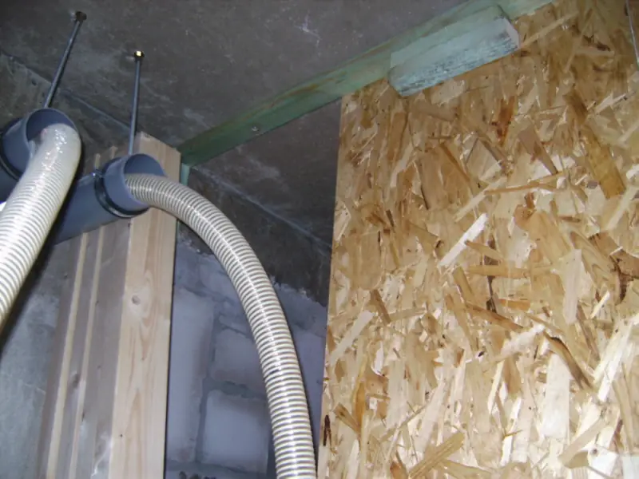

Heizöl ist wassergefährdend. Deshalb steht eine Öltankanlage nicht unter dem Heizungsrecht, sondern unter dem Wasserrecht — und dort gilt eine Fachbetriebspflicht. Geregelt ist sie in § 62 des Wasserhaushaltsgesetzes (WHG) zusammen mit § 45 der Verordnung über Anlagen zum Umgang mit wassergefährdenden Stoffen (AwSV).
Was das heißt
Errichten, innen reinigen, instand halten, instand setzen und stilllegen darf solche Anlagen nur ein zugelassener Fachbetrieb. Ein Heimwerker, ein Hausmeisterdienst oder ein Betrieb ohne diese Zulassung darf es nicht — auch dann nicht, wenn er es technisch könnte.
Wann etwas ansteht
Die Punkte aufklappen für die Einzelheiten.
Beim Einbau
Vor Inbetriebnahme
Wiederkehrend
Bei Änderung
Bei Stilllegung
Der Betrieb ist Fachbetrieb
N.J. Bothmann führt den Tankschutz als eigenen Bereich und bietet Montage, Überprüfung und Abnahme von Tankanlagen, die Dichtheitsprüfung von Versorgungsleitungen, die Erstellung von Rückhaltewannen und Abmauerungen, Schutzanstriche für gemauerte Lagerräume sowie die Überprüfung und Montage von Armaturen und Sicherheitseinrichtungen an.
Zusätzlich hat der Betrieb auf die Änderungen zur Heizöllagerung und zur Fachbetriebspflicht hingewiesen, die ab August 2017 gelten.
Allgemeine Information nach dem Stand vom September 2026, keine Rechtsberatung. Welche Pflichten und Intervalle für Ihre Anlage konkret gelten, hängt von Größe, Gefährdungsstufe und Standort ab.
